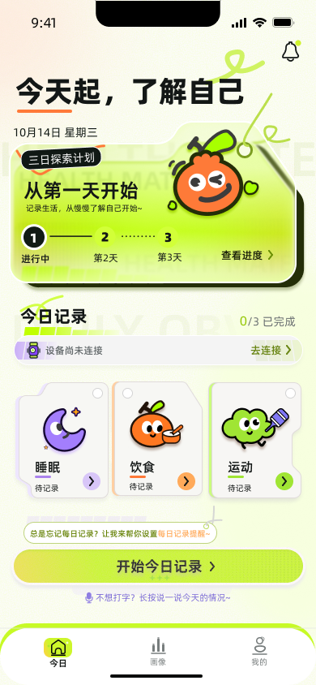
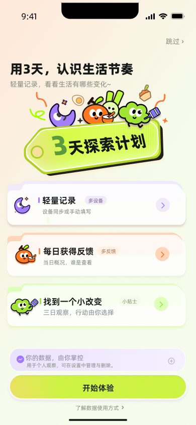
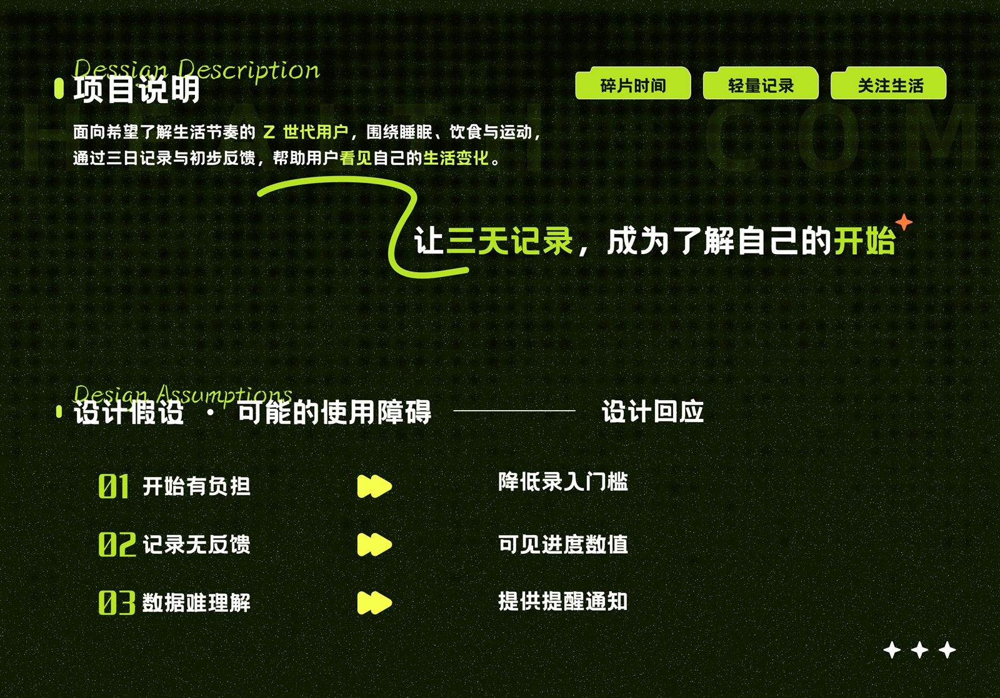
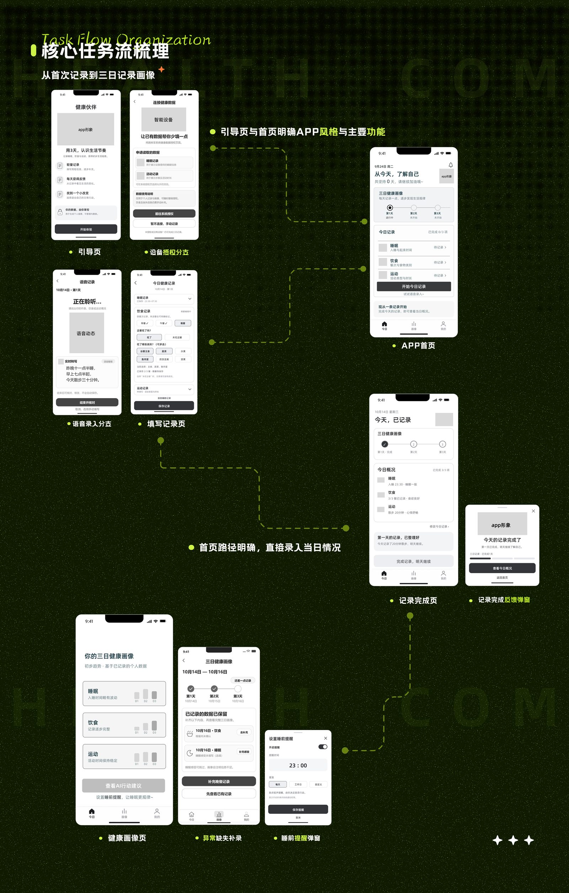
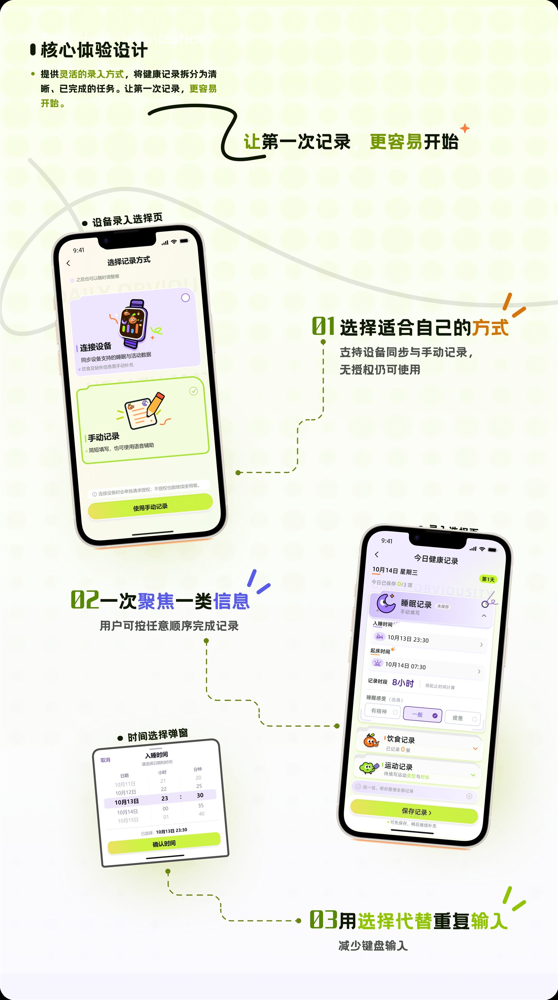
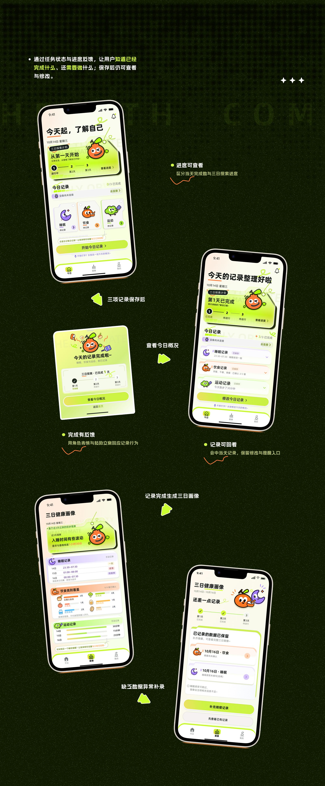
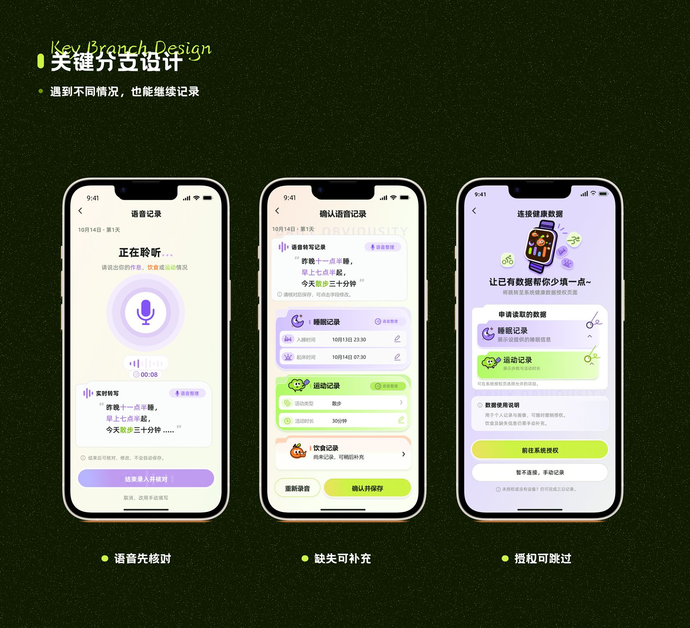
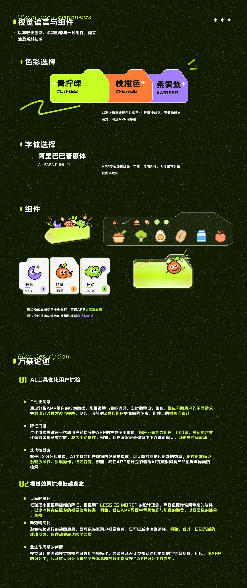

C 端 · 健康 App · 主色 #B8E600
依据 Figma「个人页面 → 健康伙伴 app」高保真原型还原：三日探索引导 → 记录方式 → 今日首页 → 睡眠 / 饮食 / 运动 → 语音核对 → 画像与作息提醒。酸檬绿主色贯穿主按钮与进度反馈。

PROTOTYPE
点击左侧步骤或手机内热区，按 Figma 原型走通三日记录闭环；含时间选择与记录完成弹窗，语音与设备授权为旁路入口。

当前：三日探索引导 — 点「开始体验」进入选择记录方式
下列为作品集叙事页（非原型照搬），用于说明场景与设计判断；上方演示才是 Figma 高保真原型路径。





